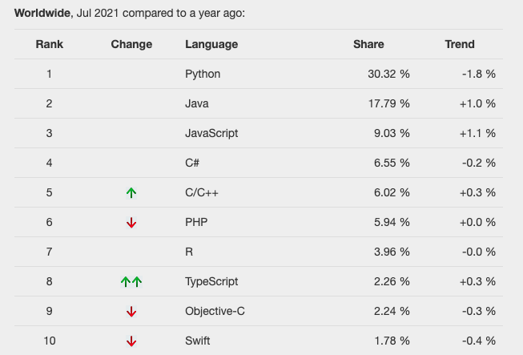

Bạn có cho rằng, C, C++ và C# chỉ là một ngôn ngữ lập trình không?
Khi nghe nói đến C, C++ và C#, chắc hẳn trong số chúng ta có không ít người đều cho rằng, chúng chỉ là một loại ngôn ngữ với các tên gọi khác nhau, và phân vân không biết nên chọn học cái nào, hay là phải học tất cả chúng.
Thực tế thì tất cả chúng đều bắt đầu bởi chữ C, nên cũng khó trách được việc hiểu sai về chúng. Tuy nhiên, mỗi loại ngôn ngữ ở trên đều có những ưu điểm và nhược điểm riếng của nó, nên bạn hãy phân biệt rõ chúng trước khi lựa chọn ngôn ngữ mình cần học nhé.
Ngôn ngữ C là gì
Khái niệm
C là một loại ngôn ngữ biên dịch (tiếng Anh: compiled language) được phát triển vào năm 1972. Để chạy được mã nguồn của C trong máy tính, chúng ta cần phải sử dụng một trình thông dịch để biên dịch mã nguồn của C thành dạng mà máy tính có thể hiểu và thực thi nó.

Ngôn ngữ C có lịch sử lâu đời, nó đã được phát triển từ những năm 1972, tuy nhiên xuyên suốt lịch sử của nó thì nó chưa bao giờ mất đi độ hot của mình. Ngôn ngữ C được sử dụng trong hầu hết các hệ thông máy tính, và do nó được thiết kết theo kiểu để máy tính có thể hiểu, nên nó có đặc điểm nổi bật là rất nhẹ và tốc độ xử lý vô cùng nhanh.
Khả năng của C
Nếu nói đến khả năng của ngôn ngữ C thì chúng ta cần phải kể đến 2 lĩnh vực là robot/lập trình nhúng và chế tạo OS/phần mềm.
Robot/lập trình nhúng ở đây bao gồm các lĩnh vực như công nghệ điện tử, thiết bị điện tử và thiết bị gia dụng. Với C, bạn có thể tạo ra các phần mềm để điều khiển các thiết bị này.
Ngoài ra, ngôn ngữ C có thể tạo ra các OS mà chúng ta vẫn đang sử dụng hằng ngày như Windows, Mac và Linux chẳng hạn.
- Xem thêm: Ngôn ngữ lập trình C là gì
C++ là gì
Khái niệm
C ++ là một ngôn ngữ lập trình được phát triển vào năm 1983 như một phần mở rộng của ngôn ngữ C. Chúng ta có thể hiểu C++ là phần lập trình hướng đối tượng được thêm vào ngôn ngữ C.

Điểm cần lưu ý là tại thời điểm phát triển ngôn ngữ C thì khái niệm lập trình hướng đối tượng (OOP) chưa được phổ biến, nên nó không được tích hợp trong ngôn ngữ C. Sau này, dựa trên nền tảng C thì các nhà phát triển đã thêm OOP vào và tạo ra ngôn ngữ C++ mà chúng ta đang sử dụng bây giờ.
Do vậy, khi nói đến C++ thì hàm ý bao gồm cả ngôn ngữ C trong đó.
C++ là ngôn ngữ C được thêm vào lập trình hướng đối tượng
Do là ngôn ngữ mở rộng của C nên C++ đã được phát triển theo hướng cải thiện khả năng của chương trình một cách tốt nhất. Nếu so sánh với C thì trong C++ đã được thêm vào rất nhiều các tiện ích giúp cải thiện C.
Các bạn cần chú ý, do có sự tương hỗ giữa hai ngôn ngữ C và C++, nên chúng ta có thể sử dụng đồng thời C và C++ trong chương trình. Và thực tế thì đây là phương pháp phát triển phần mềm thường được sử dụng nhất.
Khả năng của C++
C++ được sử dụng chủ đạo trong phát triển phần mềm smart phone cũng như trong phát triển hệ thống làm việc cũng như là phần mềm web. Một đại diện tiêu biểu đó chính là bộ công cụ thiết kế trò chơi Unreal-Engine vốn được sử dụng trong phát triển game của gã khổng lồ Google chẳng hạn.
C# là gì
Khái niệm
C# là ngôn ngữ lập trình được MicroSoft phát triển vào năm 2020. Mặc dù cùng bắt đầu bởi ký tự C và khiến chúng ta nghỉ chúng là giống nhau, tuy nhiên thực chất thì chúng là 2 ngôn ngữ lập trình hoàn toàn khác nhau.
Lý do là bởi vì C# được phát triển dựa vào C và Java. Khác với C++ được xem là ngôn ngữ mở rộng của C, thì C# lại thừa hướng tính năng của C, nhưng lại phát triển thành một ngôn ngữ lập trình hoàn toàn khác.
Và tại thời điểm Kiyoshi viết bài này (21-08-01) thì C# đã vượt qua C/C++ và đứng thứ 4 trên bảng xếp hạng các ngôn ngữ lập trình được yêu thích trên toàn thế giới.

Nguồn: PYPL
C# là đứa con của C và Java
C# được phát triển dựa theo ngôn ngữ C và ngôn ngữ Java. Nó kế thừa tính dễ hiểu, cũng như các phần tiện ích của cả hai ngôn ngữ này để tạo nên một ngôn ngữ lập trình mới. C# có cú pháp khá giống với C/C++, tuy nhiên nó được thêm vào rất nhiều chế hạn cũng như cải tiến.
Các bạn cần chú ý, mặc dù cách viết có phần giống nhau, nhưng giữa C# và C/C++ không có mối quan hệ tương hỗ, do đó chúng ta không thể sử dụng đồng thời C# và C/C++ trong cùng một chương trình.
Khả năng của C#
C# được sử dụng trong phát triển các hệ thống làm việc, cũng như trong phát triển các ứng dụng web lẫn trong smart phone. Một đại diện tiêu biểu phải kể đến đó chính là máy phát triển game Unity.
Do C# là đứa con tinh thần của gã khổng lồ MicroSoft, cũng không mấy khó hiểu khi nó được sử dụng rộng rãi trong phát triển OS windows cũng như các ứng dụng chạy trên nền tảng OS này.
Sự khác biệt giữa C, C++ và C#
Tổng hợp lại các phân tích trên, chúng ta có thể hiểu sự khác biệt giữa C, C++ và C# như sau:
C++ là ngôn ngữ mở rộng của C, hai ngôn ngữ này có tính tương hỗ nên chúng ta có thể sử dụng đồng thời C và C++ trong chương trình.
C# là ngôn ngữ khác biệt được phát triển dựa theo nền tảng C. Nó không có tính tương hỗ với C/C++ nên chúng ta không thể sử dụng đồng thời C# và C/C++ trong chương trình.
C/C++ có lịch sử lâu đời, được thiết kế phù hợp với máy tính, rất nhẹ và nhanh. Do đó nó được ứng dụng rộng rãi trong tất cả các lĩnh vực liên quan tới máy tính như phát triển robot/lập trình nhúng và chế tạo OS/phần mềm. Ngược lại thì C# là đứa con tinh thần của MicroSoft, nên nó được ứng dụng rộng rãi trong phát triển OS Windows cũng như các ứng dụng chạy trên nền tảng này.
Tổng kết
Sau khi tìm hiểu về Ngôn ngữ C và sự khác biệt giữa C, C++ và C#, có lẽ bạn đã hiểu hơn và dễ dàng đưa ra lựa chọn nên học ngôn ngữ lập trình nào trong 3 ngôn ngữ lập trình nhúng này rồi. Và dù bạn lựa chọn ngôn ngữ nào thì Kiyoshi cũng sẽ có nhiệm vụ đem đến cho bạn các bài giảng và hướng dẫn đơn giản, dễ hiểu và chính xác nhất, giúp bạn có thể nhanh chóng lĩnh hội được các ngôn ngữ lập trình.
Hãy theo dõi các bài giảng tiếp theo trong chuyên đề Lập trình C cơ bản dành cho người mới học lập trình nhé.
Thân ái!
HOME>> lập trình c cơ bản dành cho người mới học lập trình>>01. giới thiệu ngôn ngữ c